Study Coordinator Guide - Fossil Smartwatch
Contents
• Data Collection
- Start the Study App
- Stop the Study App
• Transfer Data from the Smartwatch to the Laptop
- Enable the Laptop's Hotspot
- Connect the Smartwatch to the Wi-Fi Hotspot
- Retrieve the Smartwatch IP Address
- Run the Script to Offload the Data
- Confirm the Succesful Script Execution
- Disable the Laptop’s Hotspot
• Final Steps
Data Collection
These instructions will guide you in collecting data using the Fossil smartwatch. We understand these procedures are quite different from the instructions for MotionSense HRV, so please reach out to us with any questions.
Every morning when the participant starts their day, we ask them to wear the watch and start the data collection app on the watch (explained below). The battery should ideally last for 8 to 12 hours from a full charge. We ask participants to take off the watch for charging at least nightly. We especially want participants to charge the device every night and begin wearing to resume data collection the next morning.
Note: When the charge goes below 10%, you will see the following watch face. When the battery drops below 10%, the data collection app on the watch will stop collecting data.
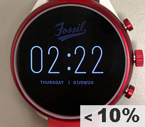
This smartwatch is different from MotionSense HRV in that data are stored on the watch itself, rather than streaming in real-time to the smartphone platform.
Start the Study App
1) There are three buttons on the side of the smartwatch. Press the middle button to view the watch's home screen.
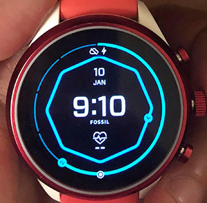
Note: You may need to wait for the watch to power on first. If so, wait for the startup to complete and the home screen to appear.
Note: Sometimes you may see a screen with a "Learn more" button when the watch restarts. If so, just press “Learn more” and it will take it to you the home screen.
2) Press the middle button again to view the recent apps as shown below.
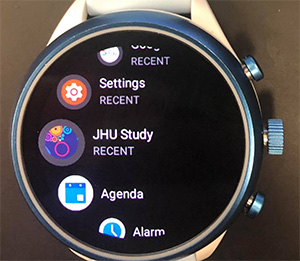
3) Using the touchscreen, find and tap “JHU Study” to open the study app. Make sure you see the study app screen as shown below. Once the study app screen appears, the app will automatically begin collecting data.
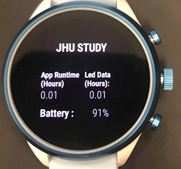
Important: It is necessary to leave the screen as it is (do not press any buttons). Navigating to a different screen may stop data collection. To conserve battery life, please remind and encourage participants to avoid using the watch for purposes outside of the study data collection.
Note: It is expected that the screen display will turn off automatically after a few seconds. Data collection will continue as long as the participant does not exit the study app screen.
General Troubleshooting: It is important to ensure the study app is always running via the main display while the watch is being worn in order to collect good data. To verify the app is running, double-tap on the screen of the watch or simply lift the wrist and you should be able to see the study app screen:
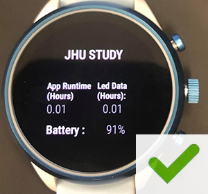
If you see either of the screens below, please follow the steps above to start the study app again.
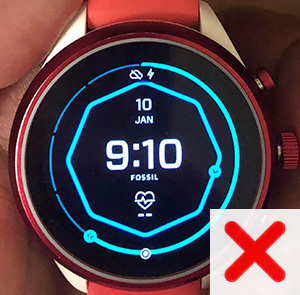 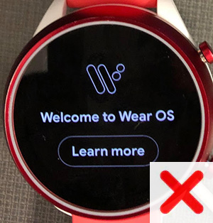
It is advised for participants to quickly check whether the app is running or not once or twice a day.
Stop the Study App
Important: To conserve storage on the watch, when it is time to end data collection for the day, we ask the participants to follow these steps to stop the app when not wearing the watch. It is advised to stop the app before taking off the watch, as we don’t want to collect any data when the watch is not worn.
Note: To reduce burden, these steps must only be completed on days when the smartwatch battery is greater than 10% at the end of the day. If the battery charge has run out or is less than 10%, the study app is no longer running so there is no need to stop the app. Simply skip these steps and charge the smartwatch at the end of the day.
To stop data collection:
1) Press the middle button to return to the home screen.
2) Press the middle button again to view recent apps.
3) Using the touchscreen, tap "Settings"
4) Tap "Apps & Notifications"
5) Tap "App Info"
6) Tap "JHU Study"
7) Tap "Force Stop"
8) Tap the "checkmark" button to confirm.
Transfer Data from the Smartwatch to the Laptop
As mentioned, the collected data is stored in the smartwatch itself. We are providing a specially configured laptop to offload the smartwatch data for analyses. Please follow these steps to transfer the smartwatch data after each participant has completed the study.
Note: If the smartwatch battery is below 10%, you will need to first set the smartwatch on the charger.
Enable the Laptop’s Hotspot
Hotspot name: Opioid
Hotspot password: opioidstudy
1) On the laptop, login to the Ubuntu operating system. The password is opioid
Note: There is a file named "data_export.sh" on the Desktop. It is important not to move or delete this file.
2) On the left side of the laptop screen, click the Settings icon.
3) Select "Wi-Fi" from the left-hand Settings menu.
4) In the top-right corner of the window, select the Menu icon (fourth icon from the right), and click “Turn On Wi-Fi Hotspot...” then click the "Turn On" button to confirm.
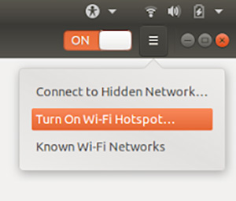
Connect the Smartwatch to the Wi-Fi Hotspot
1) From the smartwatch home screen, press the middle button to view recent apps, then tap "Settings"
2) Scroll down and tap "Connectivity"
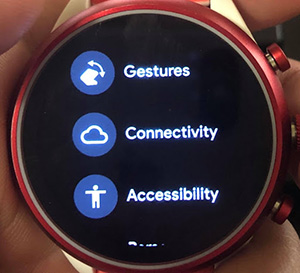
3) Tap "Wi-Fi"
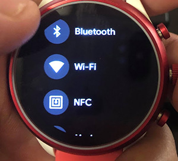
4) Scroll down and tap "Add Network"
5) Tap the network named "Opioid" to connect to the laptop's hotspot.
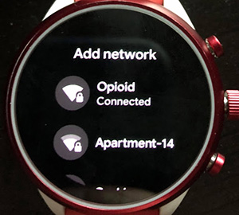
Retrieve the Smartwatch IP Address
1) When you see the Opioid hotspot network is "Connected" as shown in the step above, swipe right on the smartwatch to return to the Wi-Fi screen.
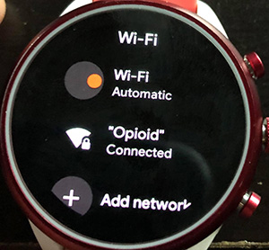
2) Tap “Opioid” to view the IP address of the smartwatch.
Troubleshooting: If you do not see the Opioid Wi-Fi network listed on this screen, try tapping the "Wi-Fi (Automatic)" button twice to toggle Wi-Fi off and back on. Then wait for the Opioid network to appear in the list. You may need to reconnect by repeating steps 4 and 5 from the previous section.
3) Make a note of this IP address as you will need it in the following steps.
Note: The below image is an example. Be sure to use the IP address shown on your smartwatch screen.
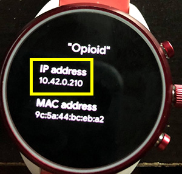
Run the Script to Offload the Data
1) On the laptop, return to the Desktop screen.
2) Right-click on the desktop and select "Open Terminal"
3) Type the following command into the command prompt window then press Enter: cd Desktop
4) In the next line of the command prompt, type the following command then press Enter: ./data_export.shNote: If you receive any errors in steps 3 or 4, try again and be sure to type the commands exactly as they are listed, including all special characters.
5) The command prompt will ask “Hello, what is the username of the participant?” Please type the desired username and press Enter.
6) The command prompt will ask “Enter the IP address of the watch.” Please type the IP address found from the previous steps and press Enter then immediately proceed to the next step.
7) On the smartwatch, you will be prompted to “Allow Debugging” on the screen. Tap on the watch screen to view the message and then tap OK.
Note: You must tap OK on the watch within 10 seconds or else the script will begin running and will return an error message. If this occurs, repeat the process beginning with step 4.
Confirm the Succesful Script Execution
1) Wait for the script to complete. A successful completion of the script looks like the example image below. You should be able to see the following lines in the command prompt./sdcard/Opioid/ : X_number of files pulled
/sdcard/logger/ : Y_number of files pulled
Data is successfully exported
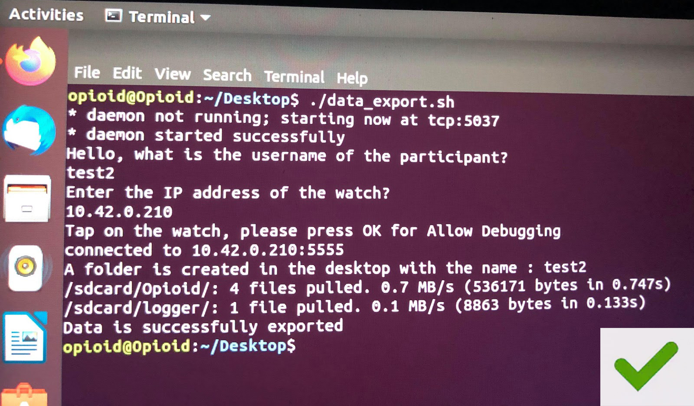
2) The script creates a folder on the Desktop with the username of the participant. This folder contains the data files (in Opioid and logger subfolders).
Note: When the script completes its execution, you should see the message “Data is successfully exported” along with the above mentioned two lines of code from step 1. If you see any error messages along with the above message, or if you don’t see the three lines mentioned, please delete the created folder from Desktop and run the script again.
Below is an example of an error message. This error occurs when we do not "Allow Debugging" on the smartwatch as explained in step 7 in the previous section.
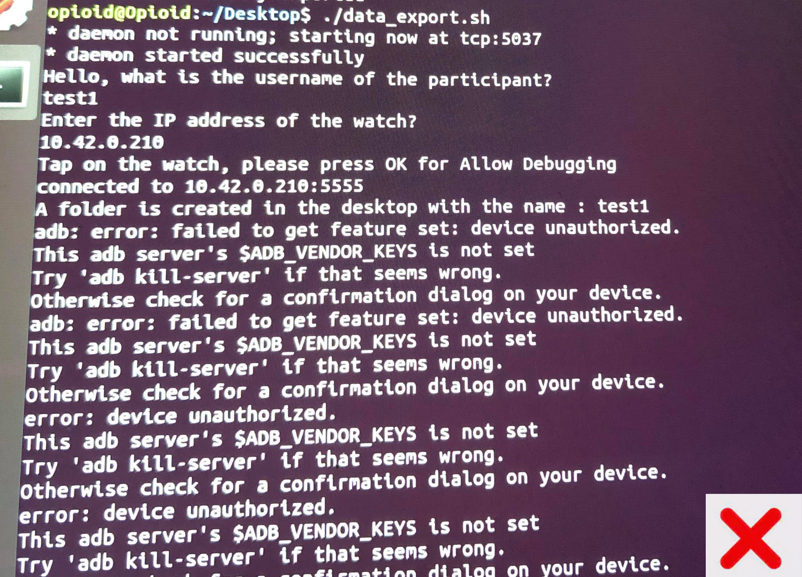
Note: Another possible error may occur if the smartwatch gets disconnected from WI-Fi. In this case, you won’t see the three lines of code from step 1. If this occurs, please delete the created folder from Desktop, follow the steps to connect the smartwatch to the Wi-Fi hotspot, and run the script again.
Disable the Laptop’s Hotspot
1) To turn off the Wi-Fi hotspot after data offloading is complete, return to the Settings window on the laptop and click on the toggle button to OFF.
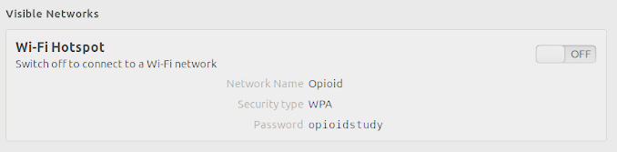
2) Click "Stop Hotspot" to confirm.
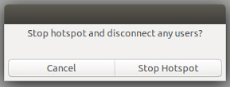
Final Steps
1) Connect the laptop to the JHU Wi-Fi network.
2) Upload the folder(s) with the particpant's username to send to the MD2K team.
Note: Running the script above will also delete the participant data from the watch so that the watch is automatically ready to use for the next participant.